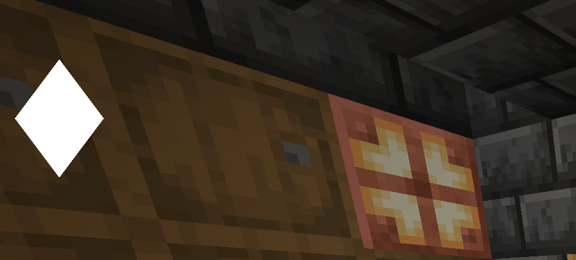
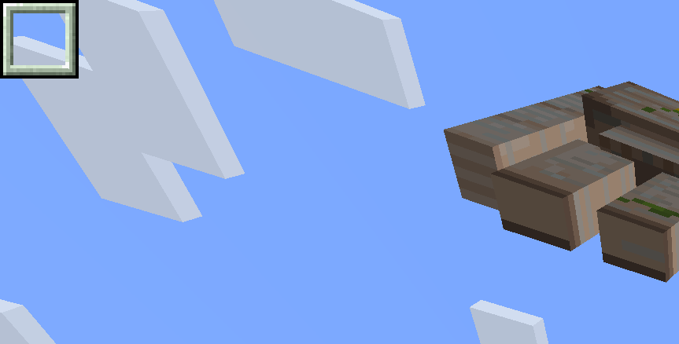

I recommend you read the "Arrays" section of [INSERT FINAL PAGE NAME]
In the examples given here I use the default "hudder" language/compiler however things will mostly act the same in JavaScript
Vertex array
A vertex array specifies an unknown group of points on the screen that make up a full shape,
a point can be defined as x (horizontal) position and y (horizontal) position.
A vertex array (in hudder) is structured as the following:
[x1, y1, x2, y2, x3, y3, x4, y4, x5, y5...]
Example:
;colorvertices, [20, 20, 5, 40, 20, 60, 35, 40], 0xFFFFFFFF;
Will draw a white diamond in the top left corner of the screen:

More than four points?
Hudder draws in fours, each element on screen is made up of four points,
if not enough points are provided or left in an array, the element will be discarded.
you may add as many points as you wish, 4, 8, 12, 16, 20, etc.
Texture/UV points array
A texture array is similar to a vertex array but instead of defining the positions of the shapes,
it defines the points of a texture you wish to be rendered.
In a texture array points are defined from 0 to 1 rather than pixel positions, 0 being the top or the left, 1 being the bottom or the right.
Example:
;textureVertices, "Textures/selection.png", [0, 0, 0, 20, 20, 20, 20, 0], [0, 0, 0, 1, 1, 1, 1, 0];
Will draw the selection image built into Hudder in the top left:

"Continous" rendering
While the default methods render using "Quads" draw mode, when using the continous versions of those methods (Check the Lists) Hudder draws with the "Triangle strip" draw mode
which allows for easier drawing of more complex shapes.
Unlike the Quads draw mode, this draw mode draws elements with 3 points instead of 4 ("TRIANGLE strip").
The quirk of this mode is that for every point you add after the 3rd, the previous points will be used as the 2 other points.
This means that you don't have to unnecessarily redefine the previous points, taking up more memory, complexity and compute time.
An example of the continous rendering can be found in the next section:
Drawing a circle
Using continous rendring you can easily draw a circle by looping 360 times and defining a point at the perimeter of the circle
And then defining another point in the center of the circle, eventually completing the circle:
{radius=10}
{circlex=10}
{circley=10}
{degrees=360}
{circlecolor=0xFFFFFFFF}
{arr=[]}
{i=0}
#while i<degrees+1
{theta = 2* 3.141592653589793 * i / 360}
{xr=radius * cos(theta)}
{yr=radius * sin(theta)}
{arr[i*4]=xr + circlex}
{arr[i*4+1]=yr + circley}
{arr[i*4+2]=circlex}
{arr[i*4+3]=circley}
{i=i+1}
;colorvertices_con, arr, circlecolor;